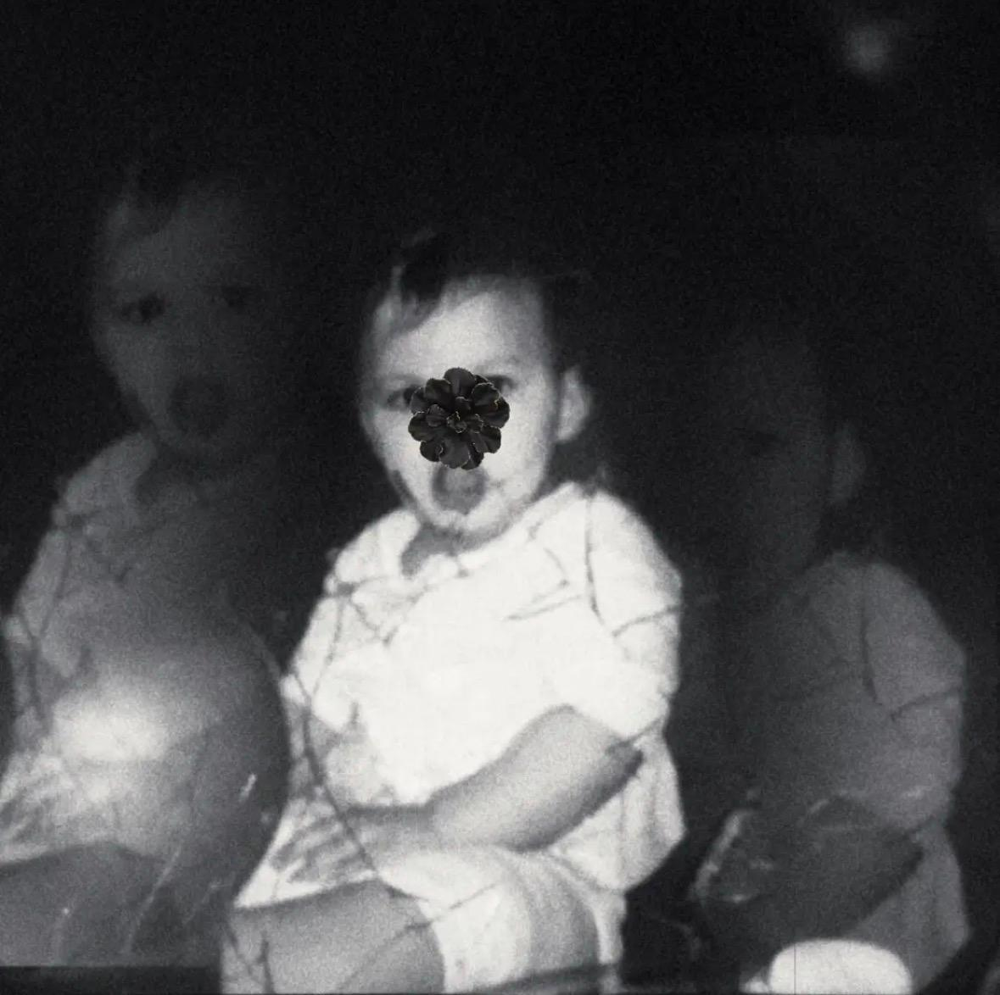

اضغطي لتشغيل لحنك الخاص قبل الانطلاق بالرحلة

إلى رفيف،
قد لا تعرفين مقدار الأثر الجميل الذي تتركينه في حياة من حولك، لكن وجودك وحده كافٍ ليجعل كثيرًا من اللحظات أجمل. لديكِ شخصية مميزة تجمع بين اللطف والرقي، وطريقة حديثك تعكس أخلاقًا جميلة واحترامًا يلفت الانتباه.
أنتِ إنسانة تستحق التقدير، ليس فقط بسبب جمالك وأناقتك، بل بسبب قلبك الطيب وروحك الجميلة. هناك أشخاص يتميزون بأمور كثيرة، لكن القليل منهم يجمعون بين الجمال والخلق والاحترام، وأنتِ واحدة من هؤلاء الأشخاص.
لا تجعلي يومًا صعبًا أو كلمة عابرة تجعلك تشكين في نفسك، فأنتِ أقوى مما تظنين، وأقدر على تحقيق أحلامك مما تتخيلين. حافظي على ثقتك بنفسك، وعلى ابتسامتك التي تضيف للمكان دفئًا وجمالًا.
أتمنى أن تحمل لك الأيام القادمة نجاحات كثيرة، وفرصًا جميلة، وأخبارًا تسعد قلبك. وأتمنى أن تبقي دائمًا كما أنتِ؛ إنسانة راقية، طموحة، وذات حضور لا يُنسى.
وفي النهاية، أريدك أن تتذكري شيئًا واحدًا فقط: أنتِ مميزة بطريقتك الخاصة، وقيمتك أكبر بكثير مما تتصورين، وتستحقين كل السعادة والخير الذي يمكن أن تمنحه الحياة.